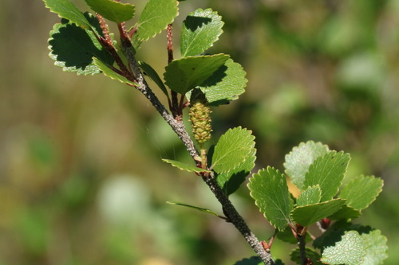

Spinus pinus bird
Streaked finch that feeds on birch, alder, and conifer seeds.
5 documented plant relationships.


 KENPEI, some rights reserved (CC BY)")

 Hladac, some rights reserved (CC BY-SA)")
 Jim Morefield, some rights reserved (CC BY)")